Interject
Claude wrote you 2,000 words. You're stuck on line 40. Now what? Use Interject, a small Claude Code mod I made, mostly for myself. At any line of a reply, even while Claude is still writing:
- Ask an agent with full tool use (Ask on the side). It can read files, run commands and search the web, and its answer lands in a box right under the line.
- Keep its answers for next turn, so Claude builds on what you found out.
- Cut, and Claude rewrites future lines, following your note.
Everything stays inline, at the line where you asked. Claude Code already has side chats and replies, but their answers float away from that line. You can also follow up on any answer, ask nested questions inside one, and turn a side chat into its own session. Each feature is shown below.
Features
Interject at any line
Select text in a reply, even while Claude is still writing, and click ✎ Interject here above the prompt. You can also type /interject.
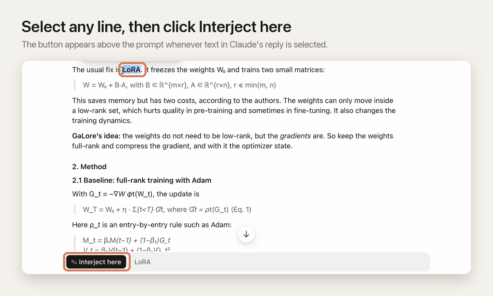
One form, four choices
A form opens under the line. Type a question or a note, then pick what happens to it.
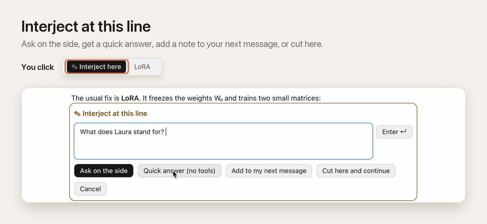
Ask on the side
An agent with the whole conversation and full tool use works on your question in the background. Its answer lands in a box at the line, and nothing is added to the main conversation.
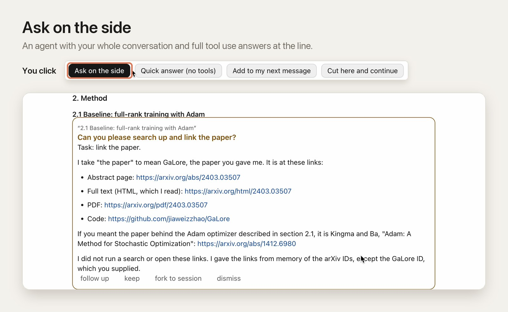
Like the answer? Click keep on its box, and the question and answer go with your next message.
Cut here and continue
When a reply goes off track, cut it at any line. The rest is dropped, and Claude rewrites from there, following your note.
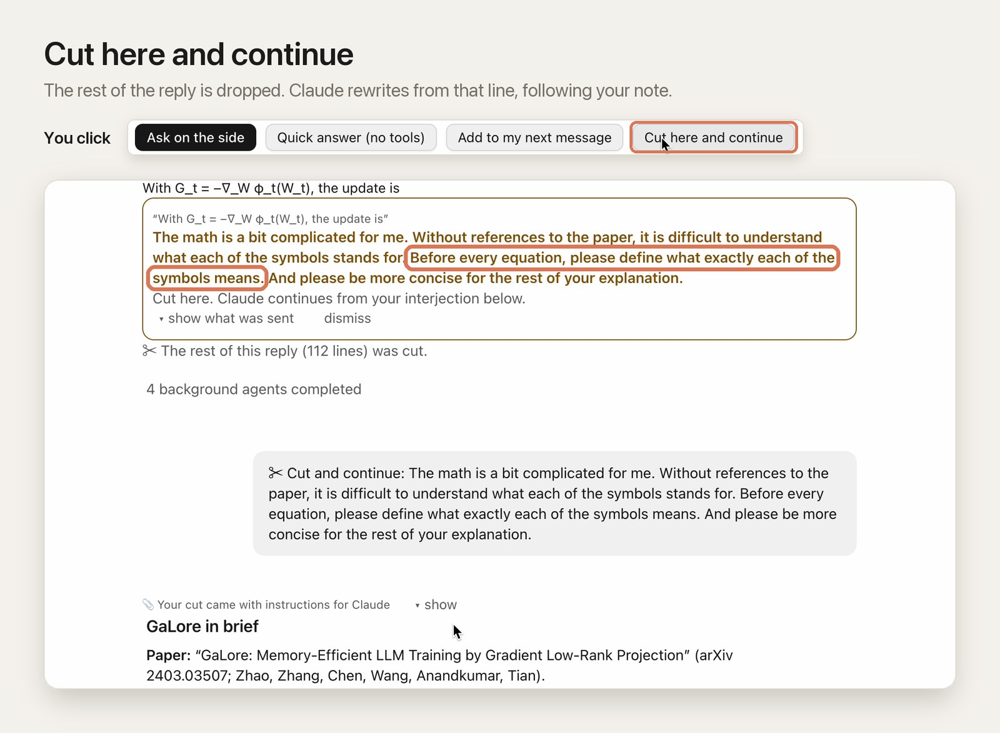
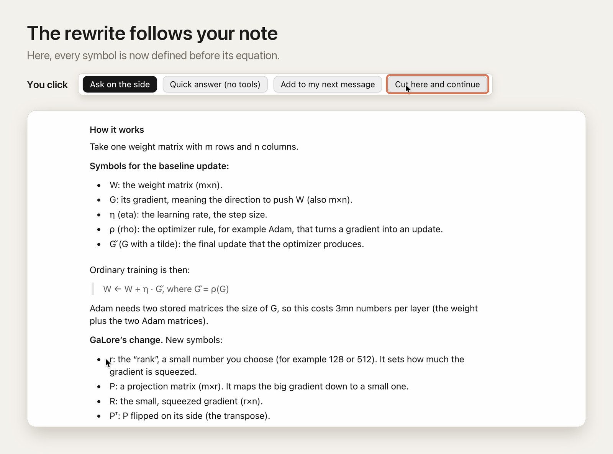
Follow up
Click follow up on any box. The follow-up sits right under it.
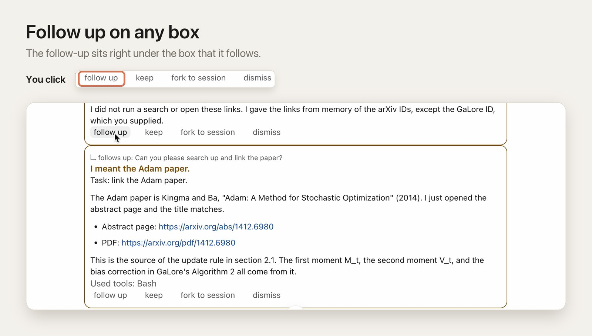
Nested interjections
Select a line inside an answer and interject again, as deep as you need. Each new box brings along the questions and answers above it.
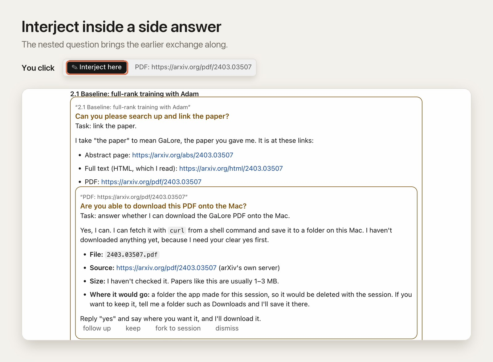
Add a note to your next message
Add to my next message leaves a note at the line. Like a kept box, it goes with your next message. When you keep a follow-up, the boxes it builds on go too. A line above the prompt counts everything that will go.
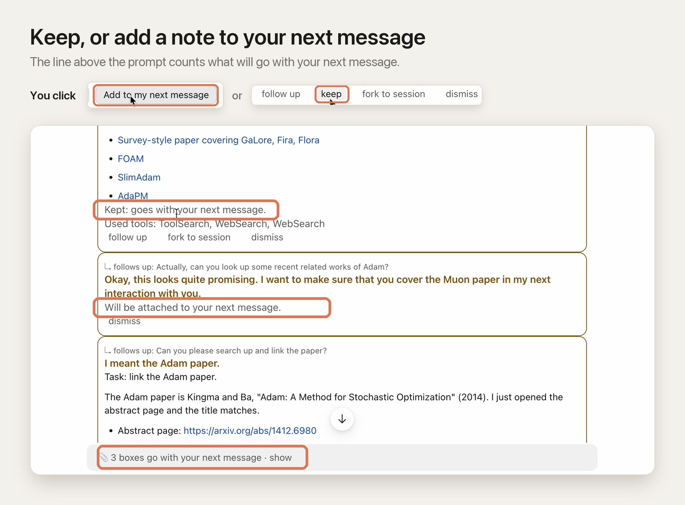
See exactly what is sent
Click show on that line to see the exact text that Claude will get. After you send, show on the reply shows what went with your message.
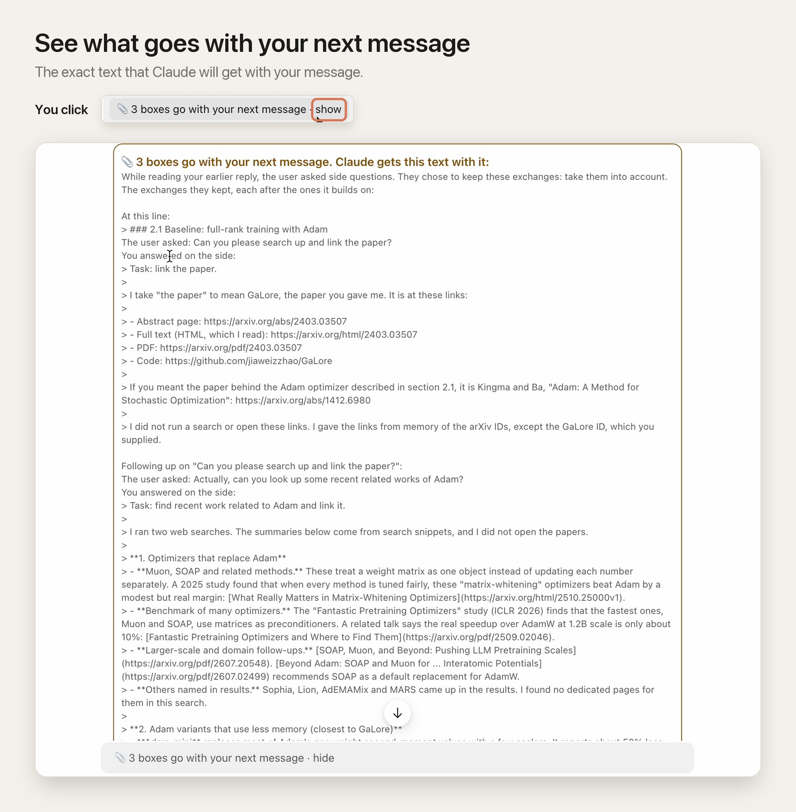
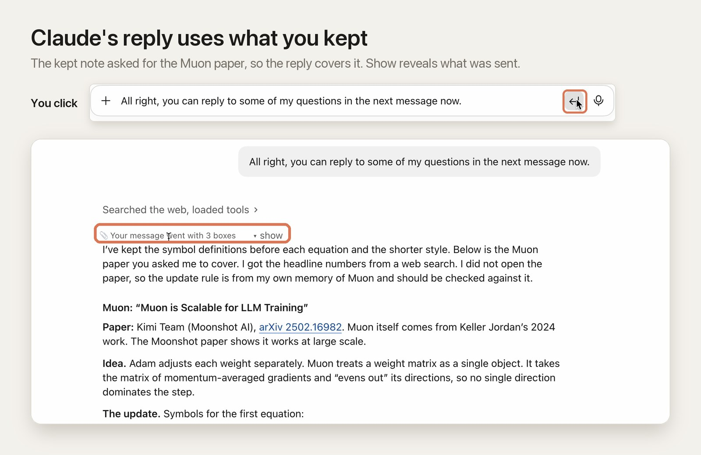
Fork to session
Turn any side chat into a session of its own. In Claude Code Desktop, it is listed under the original session, and the original hears back from it.
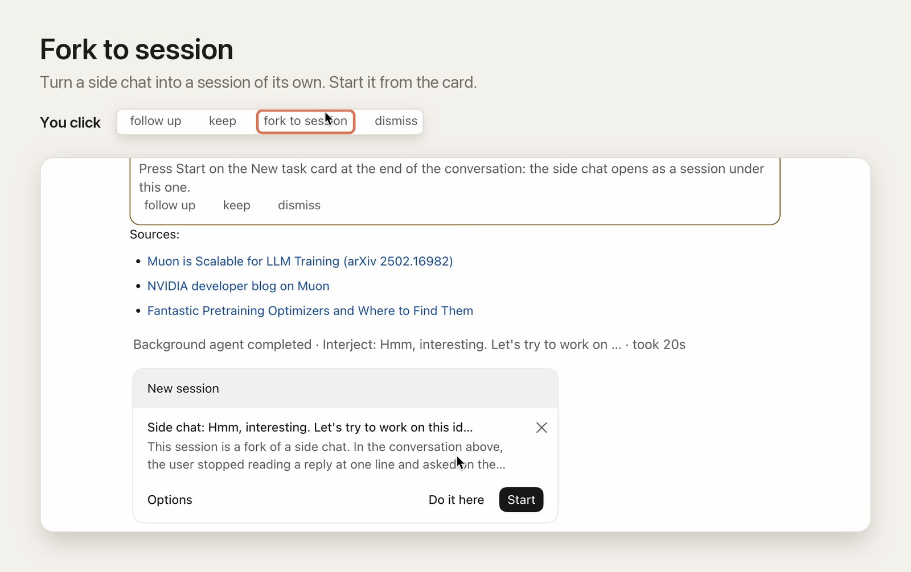
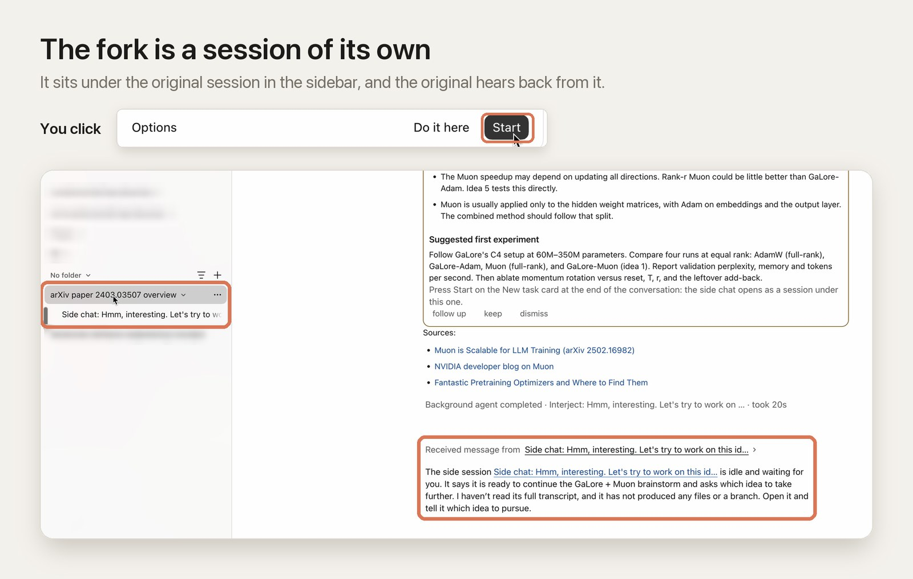
Note: listing the fork under your session needs bypass permissions mode. In auto mode, the fork opens as a separate, top-level session instead.
Quick answer
When you don't need tools, Quick answer replies in a few seconds, in the same kind of box under the line.
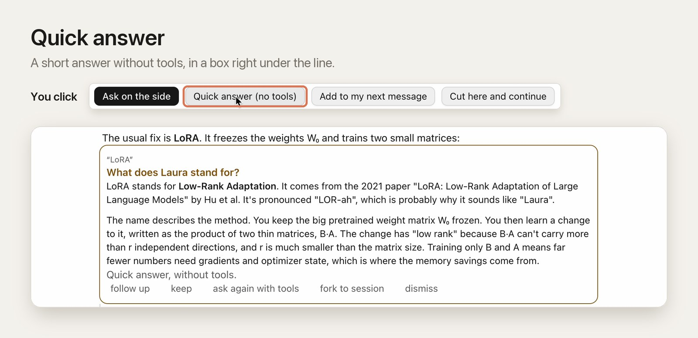
Everywhere you use Claude Code
Boxes are saved per session and come back when you resume. Interject is made for Claude Code Desktop, and it also works in the terminal and in VS Code.
Full demo
Limitations
Interject is a mod, so it can only do what Claude Code lets mods do. Several features are workarounds:
- A cut sends another message. Mods can't delete part of a saved reply. So Cut here and continue sends a new message in your name: it quotes the line, tells Claude that the rest of the reply is withdrawn, and asks it to continue from your interjection. The screen hides the rest, but the full reply stays in the conversation's history (unless you cut while Claude is still writing that part). A cut doesn't undo files that Claude changed or commands it ran after that line; use
/rewindfor that. Cutting an older reply continues at the end of the conversation. - Without bypass permissions, side chats run in a separate terminal Claude. In Desktop, the session may refuse to start the side chat's agent for a mod (in auto mode it always does). Interject then runs the side chat in a separate Claude Code process in the background (
claude -p, forking the conversation). It has the whole conversation and the same tools, but it doesn't share the session's prompt cache, so its first request costs more on a long conversation. Outside auto mode, any tool call that would need your approval is refused, since nobody is there to approve it. - Without bypass permissions, a fork isn't listed under your session. Fork to session asks Desktop to make a New task card under your session, but outside bypass mode Desktop may refuse that to a mod (auto mode always does). Interject then forks the conversation with a terminal Claude and opens the result in Desktop as a separate session of its own.
- Side chats use your plan's usage, like any other request.
- You select, then click. Mods only get clicks on buttons and links, so clicking a line directly isn't possible. Matching a selection to its line can miss on unusual formatting, like formulas. When that happens, the box goes at the end of the reply.
- The ✎ button isn't in VS Code, which has no space above the prompt for mods; type
/interjectthere instead. Typing/interjectscrolls to the bottom, because typing in the prompt box always does. - Known bug: after a rewind in Desktop, earlier boxes still show, but the ✎ button can stop appearing.
- A session holds about 2,000 boxes. Past that, its oldest boxes are removed.
It would be cool if Claude Code supported inline interjections natively one day, or gave mods even more room to build things like this!
Install
In Claude Code, type:
/plugin install interject --marketplace The-Inscrutable-X/interjectCode: github.com/The-Inscrutable-X/interject
--Hanqi Xiao
Comments